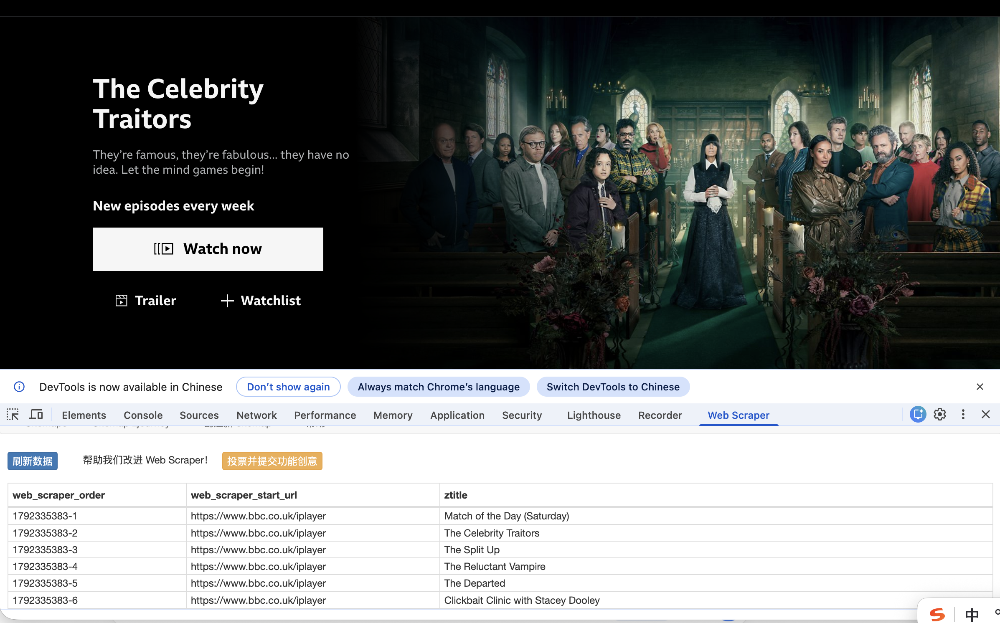
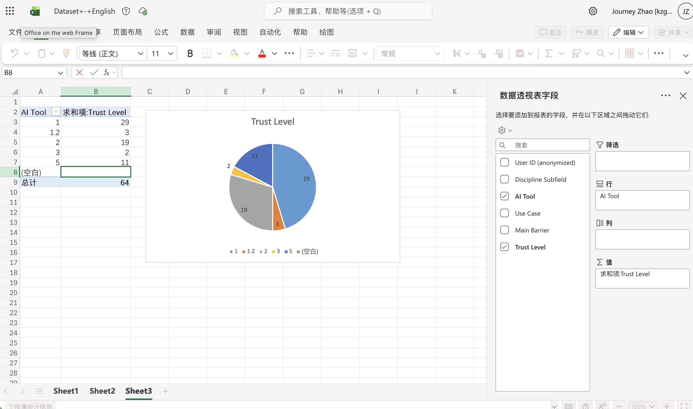

02 / REFLECTION
Weekly reflections.
To record my learning, ideas and reflections throughout the Digital Practice studies.
Contents
Open weekly directory
Week 2
WEEK 02 / REFLECTION
Week02 First workshop
It is interesting to create a piece of work and manage the operation logic. Actually, the course is a little bit similar to DW, which I learned during my postgraduate studies and that made my workshop easier to understand. However, I still made a funny mistake during the workshop which was that I forgot to press Save in VS Code. Well, at lease I will never do that again.
The world changes so fast. AI even could not write code when I was learning DW, and it could do that at lease one year ago cause I used AI to build up a questionnaire test during my internship. But I still need to amend some details because AI’s code could not run at all. So learning the rules of webpage making is still essential nowadays, because people should have the ability to type code just based on our brain and hand. At lease I should learn the establish logic even if I cannot do it.
↑ Back to contentsWeek 3
WEEK 03 / REFLECTION
Week03 Web Scraping
This week’s workshop focuses on web scraping. Compared with last week', this week's content is more complex and a new learning experience for me. Before this, I had little knowledge of web scraping, so it was difficult to understand the logic behind it and the specific operation process at first.
In class, we tried using specialized web scraping software to collect data. Through practical operations, I have a more intuitive understanding of the basic process of web scraping, and I also began to understand how to find the information I need from a web page. At the beginning, I did not fully understand the operation logic of each step. But as the task progressed, I could understand the role of each step from the effect after the step. Compared to simply reading relevant theoretical knowledge, completing a complete data scraping process myself made it easier for me to understand how this technology works. In addition to this, we also learned about writing code in Python for web scraping. But accomplishing the same task by writing code is significantly more difficult than using off-the-shelf software.
Through this week's study, my biggest gain is that I have a preliminary understanding of web scraping, and I have begun to realize that data collection in digital media research is not a completely automated step without a thinking process. Whether using scraping software or writing code in Python, we need to first understand what data we want to collect and how we should obtain it. Different tools also differ in operational difficulty and flexibility. Learning digital methods requires not only understanding relevant concepts, but also gradually building an understanding of technical processes through practical operations.

↑ Back to contentsWeek 4
WEEK 04 / REFLECTION
Week04 Data Collection
We had our first group experience this week, and I was lucky to find some interesting group members.
In the process of collecting data, It is common to meet some moral and ethical problems. I think the most important issue is the question of "permission." Whether to accept the use of one's data is a very personal matter: someone cares and someone doesn’t. We’re not sure about if the users are willing to allow researchers to collect their data. So whether we can collect someone's data may depend on whether they agree with the platform's rules, but perhaps they will not stop using the platform. Users and platforms may be somewhat dissatisfied with each other, but they continue to cooperate.
As I discussed this issue further, I realized that whether data is publicly accessible is not entirely the same as whether researchers should use it. Even if the content posted by some users can be seen by anyone, it does not mean that they necessarily expect that the content will be collected, organized, or even used for academic analysis. Therefore, ethical issues in data collection may be more complex than we initially thought. We need to consider not only whether it is technically possible to obtain data, but also whether it is reasonable to obtain these data, and what responsibilities researchers should bear for the use of data.
During the discussions in the workshop, our group members have talked about some special sences like disability. It seems that disability is not related to the usage of AI, but I think it deserves to discussed in order to access the situation of blind and deaf-mute individuals because AI can help them to a greater extent. We haven't finalized the keywords yet, so that is just an idea. I've started gathering data on specific topics from the website, hoping to present it smoothly during the workshop next week.
↑ Back to contentsWeek 5
WEEK 05 / REFLECTION
Week05 Data Visualization
This week we had a very meaningful group discussion. Looking back on the group work last week, we initially thought that we had considered the research topic and data collection direction more comprehensively. However, after practical operations and further discussions, we found that there were some problems with the original data classification and research scope.
From the beginning, we selected a variety of different AI tools as research objects, hoping to understand the use of AI by British college students and their attitudes towards different AI products by comparing these different tools. However, when we started collecting data, we discovered that not all AI tools were widely used among UK university students. Although we obtained a lot of posts, some of the data was not closely related to our research goals, so it was difficult to extract truly valuable information from the large number of results.
Our team mainly scraped posts from Reddit about the use of AI by British college students, and collected about 100 pieces of data respectively for ChatGPT, DeepSeek, Gemini and Claude. After obtaining these data, we classified the posts according to several main dimensions according to different research purposes. During this process, I gradually realized that data classification is not simply labeling existing information, but a process in which researchers reorganize information based on their own research questions. A post might be about trust in AI, practical experience and academic use. If we classify based on only one of these aspects, we risk overlooking other valuable aspects of the message. Therefore, how to set reasonable classification standards and how to deal with the connections between different categories are very important part of data analysis. This made me realize that data does not exist completely independent of the researcher. The data we choose, the keywords we use, and the criteria by which we categorize the data all affect the phenomena we can ultimately observe.
Beyond the data itself, this task also made me to reconsider the ethical issues involved in data collection. Although Reddit posts are publicly available and can be accessed through web scraping tools, this does not necessarily mean that the posters want their content to be collected and analyzed by researchers. This is especially true when posts involve relatively sensitive topics such as students’ learning experiences, personal feelings, or even academic misconduct; in such cases, we should handle the information with greater caution. Researchers need to consider how to protect posters’ privacy and whether usernames and other information that could identify individuals should be hidden when presenting research findings. Publicly accessible data and obtaining explicit consent from individuals are not entirely the same thing. Even if the content can be easily obtained by technology, we still need to consider whether its use is appropriate.
Data visualization is not entirely unfamiliar to me, because I have encountered related content in my studies and work in the past. However, pivot table is a relatively new approach for me. With pivot tables, we can summarize originally scattered data according to different classification criteria, making it easier to observe the usage of different AI tools and the relationship between students’ trust in AI and its specific uses. Compared with reading a large number of posts directly, organized data and charts can help us identify more obvious trends quickly and make discussions among group members more concrete. However, data visualization is not as simple as just creating a chart. First, the classification of the data itself must be clear enough; otherwise, the chart may not accurately present the information we want to convey. Second, there may be overlaps between different categories, and some posts may contain multiple different viewpoints and purposes. If we oversimplify the data to make the chart more concise, we may lose some important information from the original posts.
Overall, this week’s workshop gave me a deeper understanding of data collection and analysis in digital research. Previously, I might considered that data collection mainly involved using tools to gather enough information and then organizing it. But this experience made me realize that researchers’ assumptions before data collection, the choices they make during the collection process, and the subsequent classification and visualization may all affect the final research outcomes.

↑ Back to contents